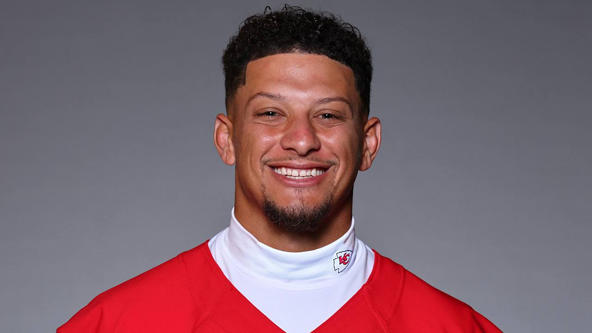
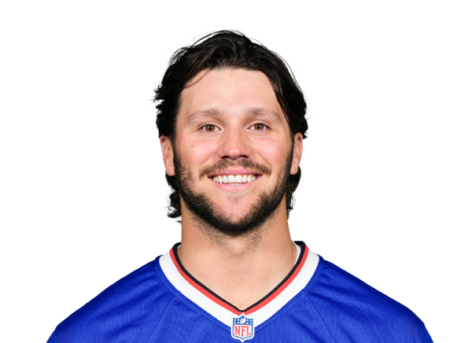
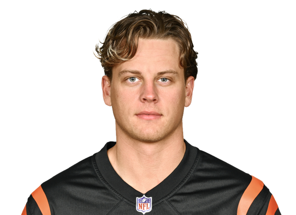
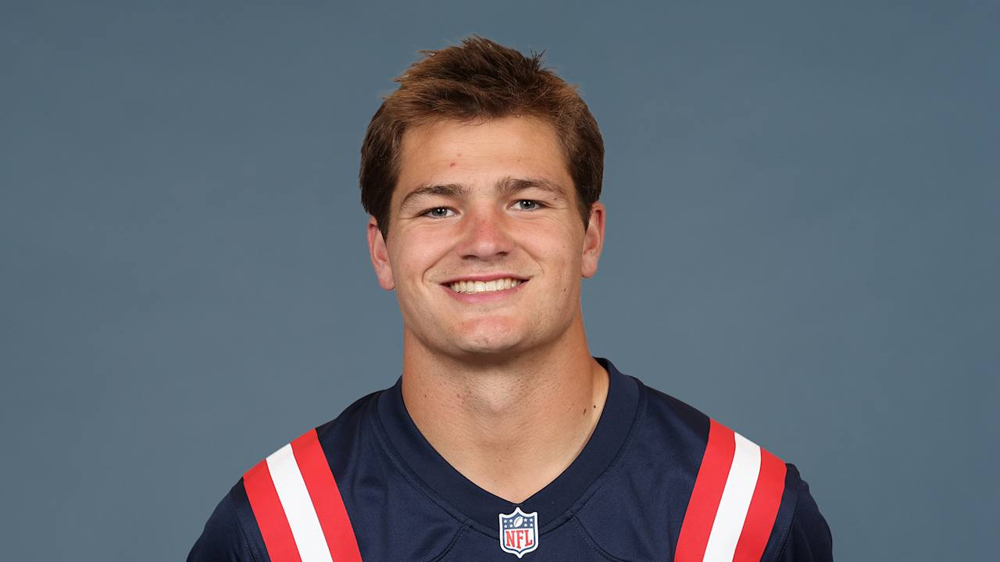

This table ranks my top quarterbacks in the NFL heading into the 2025 season, based on performance, leadership, and overall talent.
| Tier | Quarterback | Team | Image | Strength | Comment |
|---|---|---|---|---|---|
| S | Lamar Jackson | Baltimore Ravens | |
Dual Threat MVP | Lamar is just the GOAT by far the best QB in the league he does it all and when he is injured you can easily see how the ravens struggle without him. |
| A | Patrick Mahomes | Kansas City Chiefs |  | Clutch Playmaker | Still elite and unstoppable in the playoffs, but Lamar edges him out this season and in any season tbh. |
| A | Josh Allen | Buffalo Bills |  | Power & Mobility | Strong arm and tough runner he has also been one of the best QB's for a few years now playing consistenly also winning mvp last season. |
| B | Joe Burrow | Cincinnati Bengals |  | Cool Under Pressure | Calm and confident leader with elite accuracy, Burrow has been very good on the field also being consistent and very good when he plays recently injuries have been ruining him. |
| C | Drake Maye | New England Patriots |  | Young Gun | Rookie QB with huge potential, so far this season Drake Maye is looking like a mvp candidate with his team playing very well this season. |
| D | Justin Herbert | Los Angeles Chargers | |
Strong Arm | Talented but inconsistent has a good arm just isnt at the level as the others are. |
This tier list ranks my top QBs for 2025. Lamar Jackson is #1 thanks to his all around dominance and leadership. Mahomes and Allen are close behind, while Burrow remains a steady star. Drake Maye is a breakout candidate who could surprise people this season. These rankings will always spark debate that's what makes football fun.